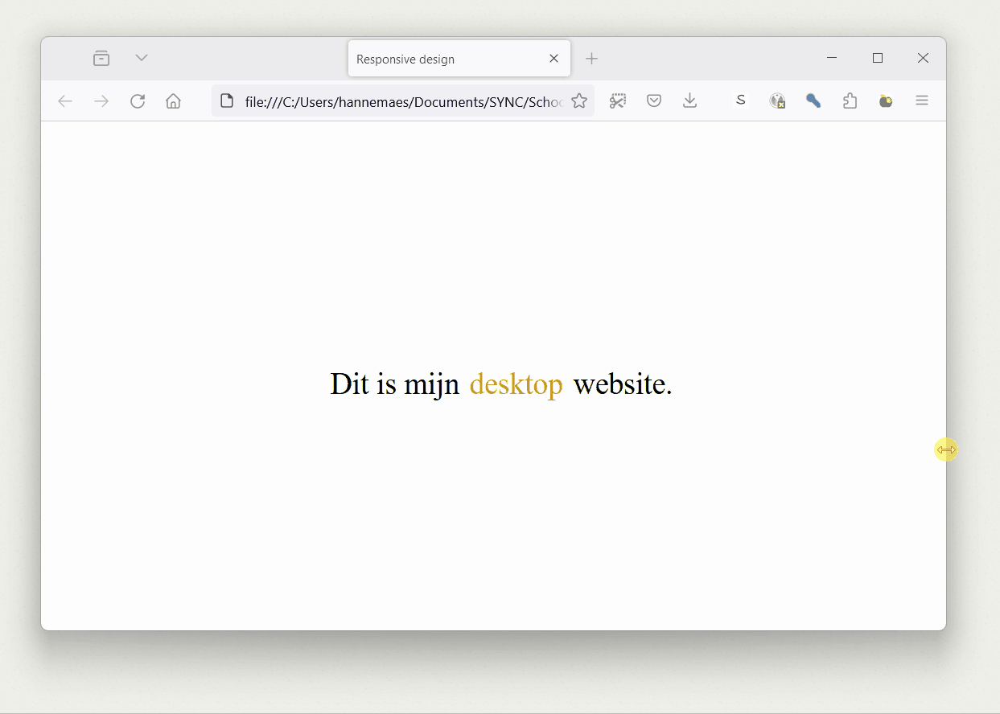
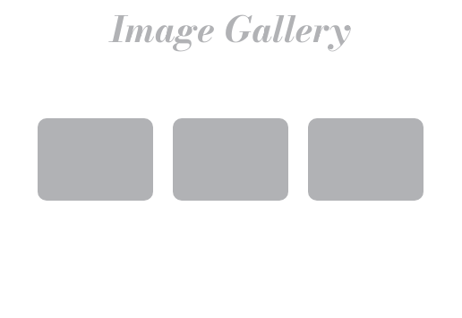
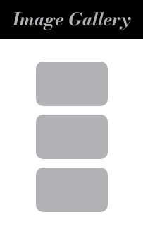

Media queries
Media queries stellen ons in staat om specifieke CSS-regels toe te passen op basis van de eigenschappen van het apparaat.

<body>
Dit is mijn <span class="text"></span> website.
</body>
body {
font-size: 30px;
}
.text::before {
content: 'desktop';
color: goldenrod;
margin-left: 10px;
margin-right: 10px;
}
/* gebruik deze styling als het scherm 500px of minder breed is */
@media screen and (max-width: 500px) {
body {
background-color: black;
color: white;
}
.text::before {
content: 'mobile';
}
}
Soorten media quaries
Scherm breedte
/* Schermen kleiner dan of gelijk aan 768px breed */
@media only screen and (max-width: 768px) {
/* CSS-regels */
}
/* Schermen groter dan 768px breed */
@media only screen and (min-width: 1000px) {
/* CSS-regels */
}
Oriëntatie (Liggend/Portret)
/* Portretmodus */
@media only screen and (orientation: portrait) {
/* CSS-regels */
}
/* Liggende */
@media only screen and (orientation: landscape) {
/* CSS-regels */
}
Media queries combineren
Het is mogelijk meerdere media queries met elkaar te combineren.

<body>
<p class="orientatie">Oriëntatie</p>
<p class="text">Font-size</p>
</body>
body {
font-size: 30px;
color: grey;
}
/**************/
/* orientatie */
/**************/
/* Portretmodus */
@media only screen and (orientation: portrait) {
body {
background-color: black;
color: white;
}
.orientatie::after {
content: ': portrait';
}
}
/* Liggende */
@media only screen and (orientation: landscape) {
body {
background-color: white;
color: black;
}
.orientatie::after {
content: ': landscape';
}
}
/**************/
/* screensize */
/**************/
@media screen and (min-width: 700px) {
.text {
font-size: 100px;
}
.text::after {
content: ': 100px';
}
}
@media screen and (max-width: 700px) and (min-width: 530px) {
.text {
font-size: 80px;
}
.text::after {
content: ': 80px';
}
}
@media (max-width: 530px) {
.text {
font-size: 30px;
}
.text::after {
content: ': 30px';
}
}
Developer tools
Zowel Firefox als Chrome hebben ingebouwde opties voor het ontwikkelen van mobiele en responsieve websites in hun Developer Tools F12.
Oefening: Responsive CSS
Stap 1: Row vs column
 
Maak een responsive gallery website met minstens 3 afbeelding.
- Desktop:
- De afbeeldingen staan in een rij.
- De achtergrond van de titel is doorschijnend.
- Mobile:
- De afbeeldingen staan in een kolom.
- De achtergrond van de titel heeft een kleur.
Stap 2: Navbar vs hamburger menu


Geef je gallery een responsive menu:
- Desktop:
- Een horizontale navbar.
- Mobile:
- Een hamburger menu dat een full-screen menu opent.
Tip: Met deze CSS-regel kan je een HTML-element verwijderen:
.hide {
display: none;
}